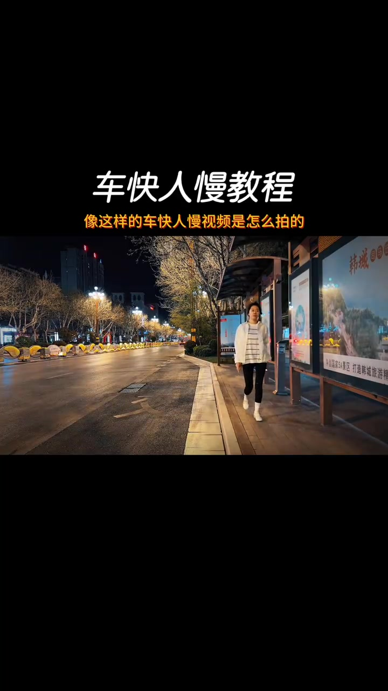
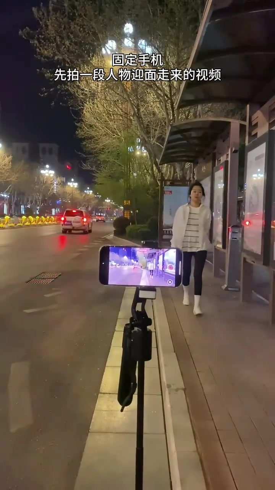
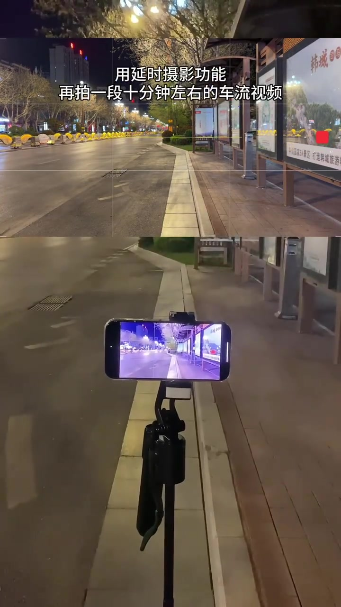
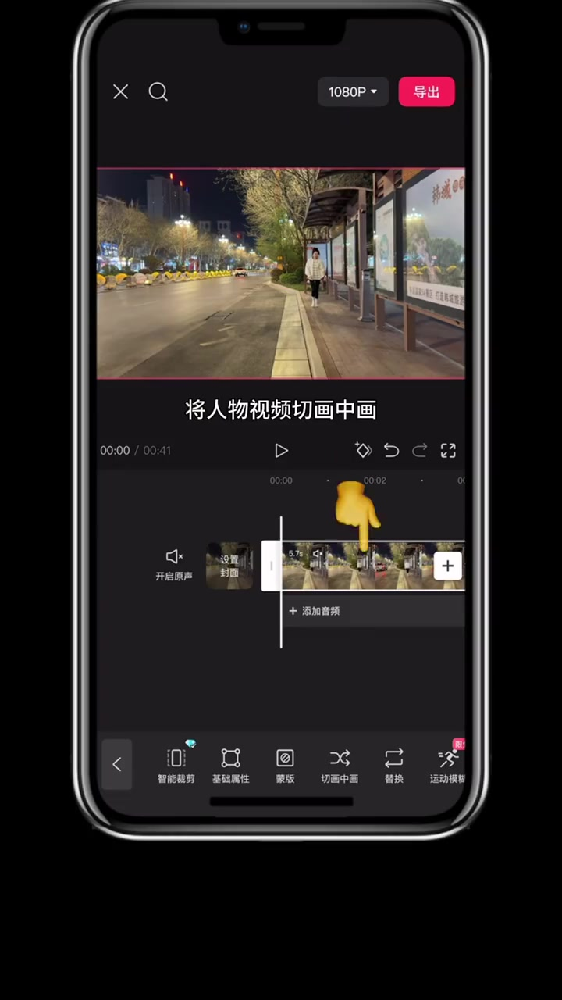
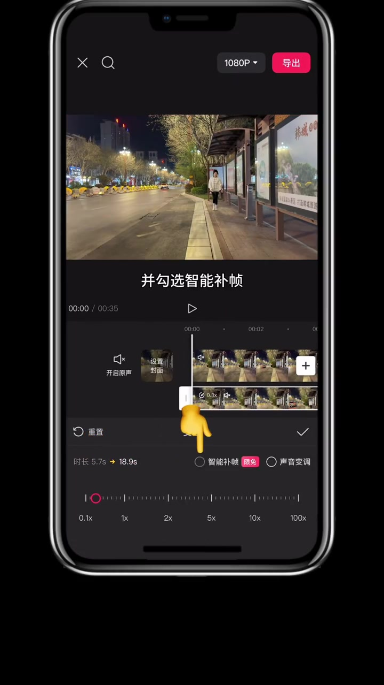
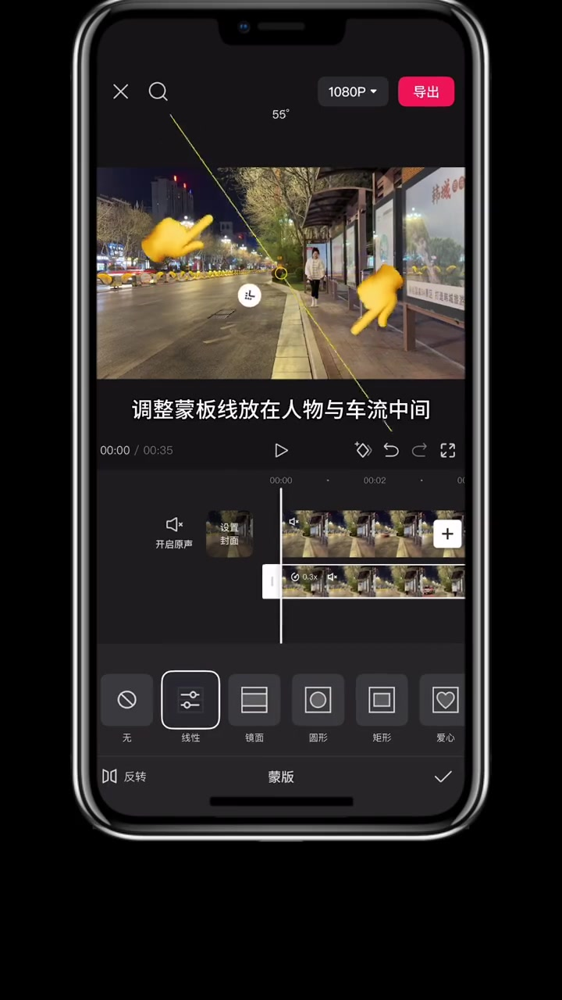
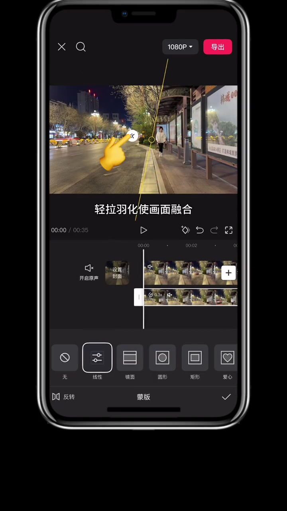
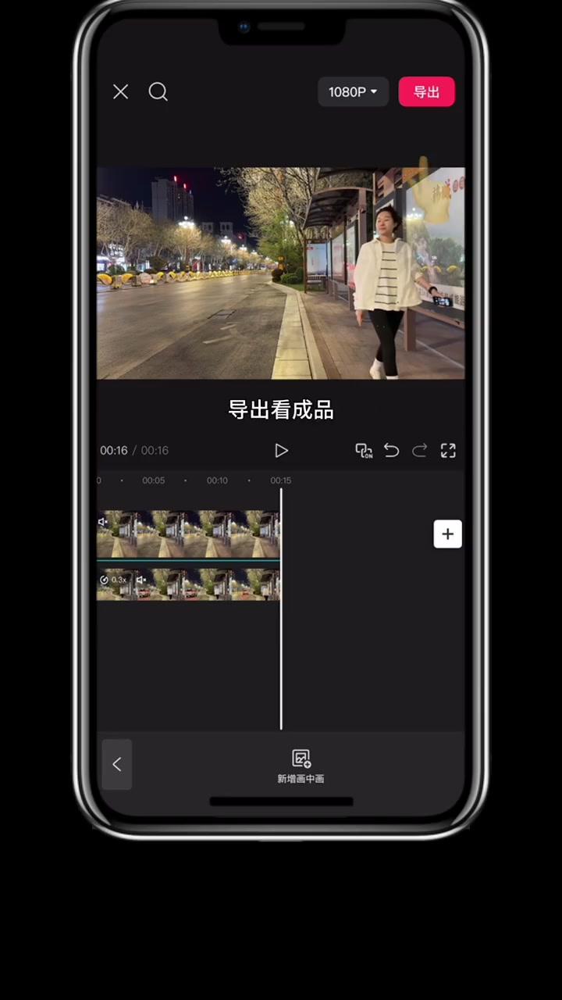

开场
先让你看到「车快人慢」长什么样
视频一开始就甩出成品感：夜色马路、车灯拉成光轨，人行道上的人物仍以正常节奏迎面走来。字幕直接抛问——像这样的车快人慢视频是怎么拍的？
Whisper 把「车快人慢」听成「车块人漫」，把「教程安排」听成「叫成安排」。页末转录保留原始分段；正文按画面字幕与剪辑语境校正理解。

拍摄第一段 · 00:03
固定手机，先拍人物迎面走来
作者说教程安排很简单：把手机固定在三脚架上，先拍一段人物迎面走来的视频。画面里能看到三脚架上的横置手机，以及人行道上穿白外套的人物朝镜头走来；右侧是亮灯的公交站亭。

拍摄第二段 · 00:07
机位不动，用延时再拍十分钟车流
关键要求是「保持机位不动」。同一位置打开延时摄影，再拍一段大约十分钟的车流视频。画面上下分屏：上方是延时取景里的空旷马路与公交站，下方是路边三脚架上的手机仍在录制。

剪辑前半 · 00:11
导入两段：人物切画中画，再降到 0.3 倍速
进入剪映：依次导入人物与车流两段视频。把人物视频切成画中画，再点变速，把速度调到约 0.3，并勾选智能补帧——画面里时间轴已标出「0.3x」，时长从约 5.7 秒被拉长到约 18.9 秒。
这一步的用意很直白：车流层保持延时带来的「快」，人物层被放慢，视觉上就形成「车快、人慢」。


剪辑后半 · 00:18
线性蒙版切开人与车，再羽化融合
给画中画添加蒙版，选择「线性」。把蒙版线调到人物与车流之间——画面上约 55° 的黄线把人行道侧与马路侧分开。然后轻轻拉动羽化，让两层画面在交界处自然融合，而不是硬切一条线。
Whisper 把「蒙版」听成「萌板」，把「轻拉羽化使画面融合」听成「轻按与画时画面融合」；画面字幕为「轻拉羽化使画面融合」。


收尾 · 00:26
配乐、删掉多余尾部，导出看成品
最后添加音乐，删掉结尾多余视频，直接导出看成品。时间轴上可见双轨齐平、画中画仍标着 0.3x；画面字幕写着「导出看成品」。片尾约 30 秒后转入成品配乐段落，夜景光轨与缓行人物再亮相一遍。

一句话带回现场
同一机位拍「人物正常走」+「延时车流」，剪辑里把人物做成画中画并降到约 0.3x，再用线性蒙版把马路侧留给快车流、人行道侧留给慢人物，羽化后配乐导出——车快人慢就立住了。